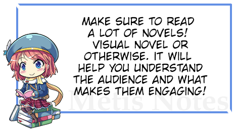

初学者指南
初学者指南W
elcome to the Beginner's Guide page! If you are new to Visual Novel Creation, may this page help you out on your endeavour.
什么是视觉小说？
视觉小说是一种互动式小说或游戏，以静态图形（通常是动漫/漫画风格）、音乐甚至偶尔的配音为特色。它具有最少的游戏玩法，并极度强调情节和角色。它们类似于“选择你的冒险”小说。主要区别在于叙述通常以第一人称视角讲述。重要的是要记住，视觉小说有许多类型和呈现风格。这是一个非常灵活的类型，您可以添加 RPG、模拟和其他游戏类型中的机制。您可以在互联网上找到有关视觉小说的更多信息，而TVTropes
摘要是一个很好的起点。
为什么选择 Visual Novel Maker？
大多数视觉小说工具都是基于文本的，并且需要一种迂回的方式来自定义您的游戏。Visual Novel Maker 的目标是简化流程，使开发更快，并保留基于文本引擎的自由度。
如何创建视觉小说？创建视觉小说有许多方法，因为没有“唯一的正确方法”可以进行 VN 开发。有些人可能从角色开始，而另一些人可能从更结构化的方法开始。如果您有写作经验或对视觉小说有普遍了解，并且只想快速了解流程，

Aevee Bee 创建了一篇文章，您可以在其中制定计划，在一个月内完成写作，在三个半月内完成 VN。如果您有任何问题，请随时在我们的官方论坛或Steam 论坛